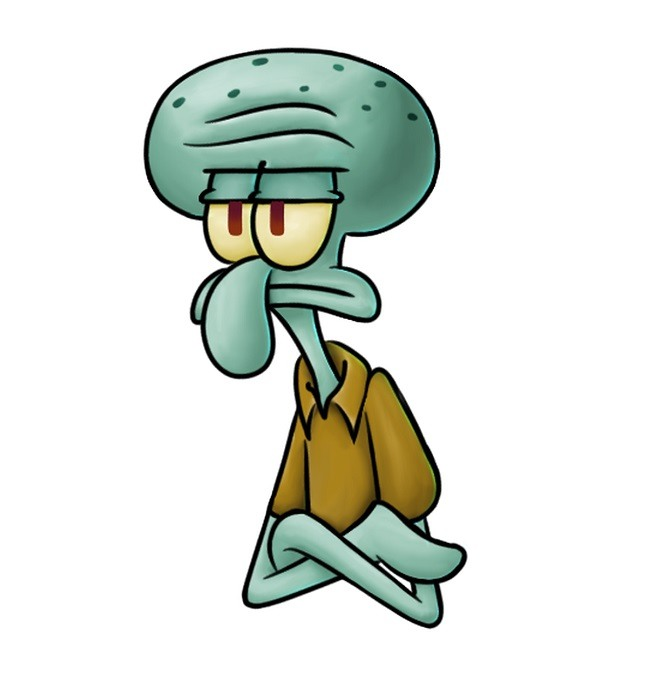
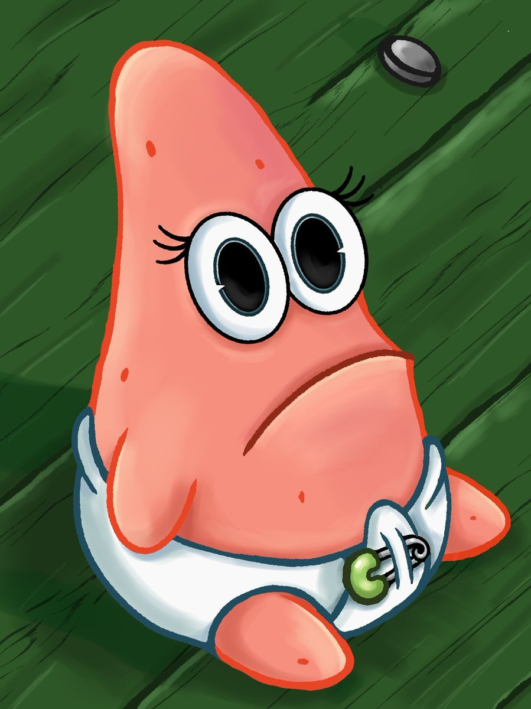

Губка Боб Квадратные Штаны (настоящее имя — Ро́берт Квадратные Штаны; англ. SpongeBob SquarePants) — главный герой американского одноимённого мультипликационного сериала, премьера которого состоялась 1 мая 1999 года в США, и 1 января 2000 года в России на канале «Nickelodeon». Персонаж был придуман морским биологом и аниматором Стивеном Хилленбергом и озвучен актёром Томасом Кенни (в русской версии персонаж озвучен Сергеем Балабановым). В России также известен как Спанч Боб Сквэр Пэнтс (фонетическая транскрипция). Судя по сведениям из его водительского удостоверения, он родился 14 июля 1986 года.
Сквидвард
Скви́двард Квентин Тентаклс (англ. Squidward Q. Tentacles) — один из главных персонажей американского мульт-сериала «Губка Боб Квадратные Штаны», премьера которого состоялась 1 мая 1999 года на канале «Nickelodeon». Сквидвард был придуман морским биологом и художником-мультипликатором Стивеном Хилленбергом и озвучен актёром Роджером Бампассом (в русской версии персонаж озвучен Иваном Агаповым). Он впервые появился на телевидении в пилотном эпизоде сериала «Требуется помощник» 1 мая 1999 года. Хилленберг создал образ Сквидварда с шестью щупальцами для более простой анимации.

Патрик
Патрик Стар (англ. Patrick Star) — один из самых главных персонажей американского мультсериала «Губка Боб Квадратные Штаны», озвученный Биллом Фагербакки, а в русском варианте — актёром Юрием Маляровым. Патрик — глуповатая, но совестливая розовая морская звезда плотного телосложения. Герой обычно одет в зелёные (гавайские) шорты с фиолетовыми цветами[2]. В русской озвучке также назывался Патрик Морская Звезда.

Сэнди
Сандра Дженнифер "Сэнди" Чикс (англ. Sandy Cheeks) - это один из десяти главных персонажей мультсериала "Губка Боб Квадратные Штаны". Это белка с поверхности, которая носит водолазный костюм и живет в наполненной воздухом стеклянном куполе. Её озвучивает Кэролин Лоуренс.
Планктон
Шелдон Питер Джей Планктон (англ. Sheldon J. Plankton) — один из десяти главных персонажей мультсериала "Губка Боб Квадратные Штаны". Он управляет неудачным рестораном под названием "Чам Баккет" вместе с Карен, водонепроницаемым компьютером, которая является его женой.